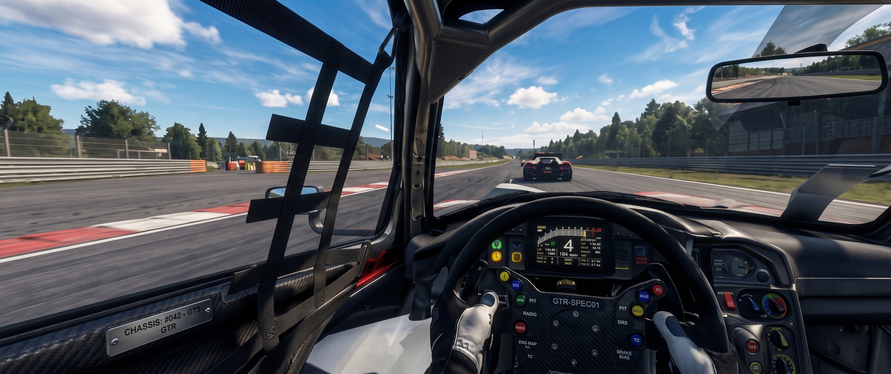
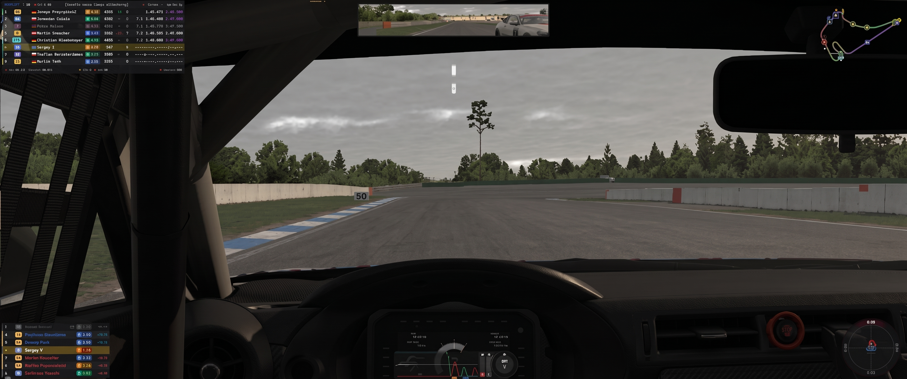
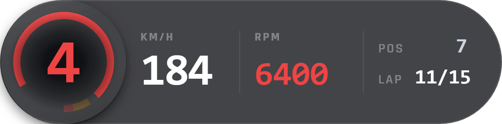
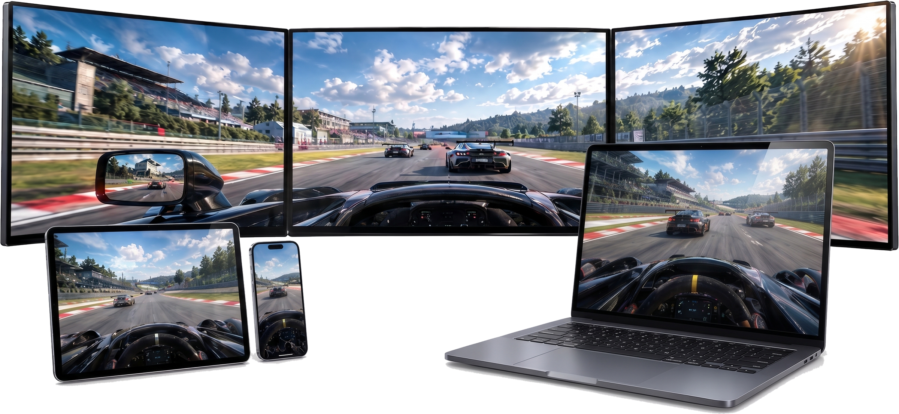

YOUR DATA.
Marble Trace is a free, lightweight overlay for iRacing. A tiny Rust core reads telemetry straight from the sim — beautiful widgets float above it, costing you almost no FPS.
Why Marble Trace
Built for
real racing.
Lightweight, flexible and powerful — Marble Trace gives you the telemetry data you need, without getting in your way.

Transparent frameless overlay
Stays on top, never blocks your view.
-
Zero overhead
A tiny Rust backend reads telemetry directly, with minimal impact on performance.
-
Fully modular
Widgets can be independently positioned, resized and styled.
-
Layouts for every session
Visual editor and session-based layout switching for practice, qualifying and races.
-
Any screen
Use it on your main screen, a phone, a tablet or a second PC over your local network. Nothing installed on the device.
Every widget in the app, at the size you actually read it. Take the four you race with, or the whole board.
Race & performance
Timing & standings
Awareness
Car & session
Streaming
Race & Performance
Race Dash

Speed, gear, RPM, position and lap in one strip — the one widget that never leaves the screen.
Multi-screen layouts
Same data.
Anywhere.
Open a layout on any screen on your network — a phone, a tablet, a laptop, a second PC. A browser is all the device needs; nothing is installed on it.
- A screen is a virtual monitor in the layout editor
- Every screen keeps its own widgets, scale and columns
- Open the link or scan the QR code — nothing to install

Desktop Triple monitor rig
Phone / Tablet On the wheel deck
Laptop Beside the rig
-
Virtual monitors
A remote screen is added in the layout editor beside your real monitors, at any size you like — a tablet, a phone, or a stream canvas. You drag widgets onto it the same way, and each screen keeps its own set, its own scale and its own columns.
-
OBS browser source
Point a Browser Source at the screen's address and the layout is on air, with a transparent background so only the widgets render. Add
?widget=to a link to put a single widget on its own source and place it in your scene. -
Just a browser
The app runs a small web server on your PC. Any device on the same network opens the link — no app, no account, no cloud, nothing leaves your network. Send rate is yours to set; lap times, fuel and the session clock always arrive in full.
-
Watching only
Links carry an access token you can regenerate at any time, and a device can only watch: nothing a browser sends can change a layout, a setting or the overlay you are racing on.
Layout Presets
Built for Your Cockpit
Customize position, scale, opacity, and monitors for every sim-racing discipline.
Multi-Monitor Support
Place widgets across ultra-wide, triple-screen, or secondary monitor setups with individual monitor binding.
Car & Track Profiles
Automatically switch widget sets when you change from GT3 to Formula or oval racing cars.
DirectInput Hotkeys
Bind steering wheel buttons or controller toggles to switch layouts or cycle views without touching the mouse.
Zero FPS Tax
Pure 60 FPS Telemetry
Tested in endurance racing and competitive multi-class grids.
< 1% CPU Usage
The Rust backend processes high-frequency telemetry in background threads without blocking game rendering.
Tiered Refresh Rates
60 Hz for vehicle dynamics and inputs, 10 Hz for proximity, 4 Hz for fuel and pit stops to eliminate wasted cycles.
Demand-Gated Pipeline
Only fields requested by currently active on-screen widgets are unpacked and serialized.
Community Driven
100% Free & Open Source
Licensed under MIT. No subscriptions, no ads, no telemetry paywalls.
Open Architecture
Inspect, build, and customize widgets or backend processors. Contributions and issues welcome on GitHub.
Active Community
Join fellow drivers on Discord to share layouts, suggest new widgets, and report feedback.
Safe & Approved
Reads standard iRacing shared memory SDK telemetry — completely compliant with iRacing Terms of Service.